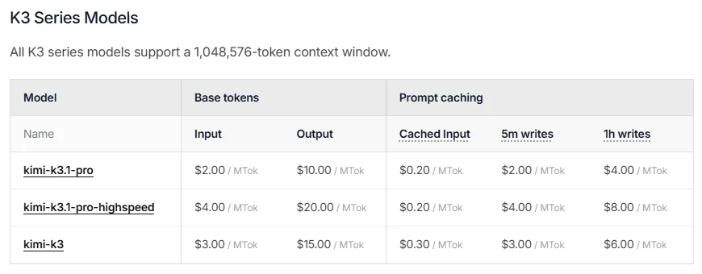
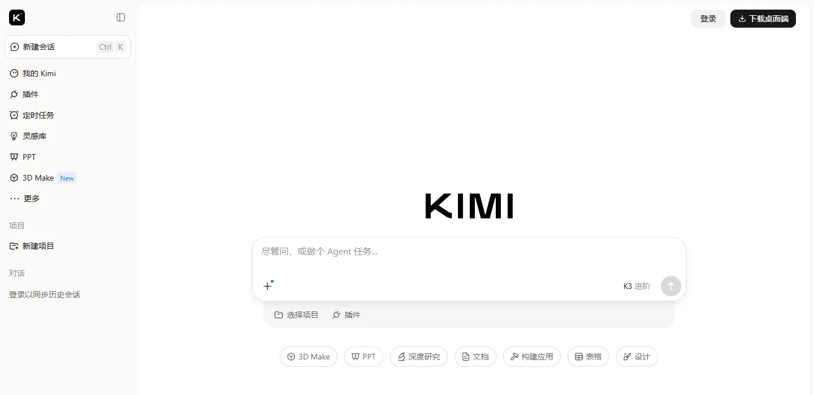

月之暗面 Kimi北京月之暗面科技
国内估值涨得最快的大模型公司：开放 2.8 万亿参数的 Kimi K3 后，年化收入从 6 月的 3 亿美元涨到 8 月的 10 亿美元以上，API 占收入七成；以高价开放模型和编程能力打入海外开发者市场。
一页结论
- K3 带来收入跃升：7 月发布 Kimi K3 后，年化收入从 6 月中旬的 3 亿美元涨到 8 月的 10 亿美元以上；公司计划年底达到 20 亿美元S3S4
- API 是主要收入：API 收入占公司整体收入七成以上，消费者订阅和在线托管模型需求同步上升S4S3
- 开放旗舰、价格不低：K3 开放权重，API 价格为输入 $3 / 输出 $15，是国产模型中最高；10 月推出更便宜的 K3.1 Pro（$2 / $10）S1S1
- 资本最热：一年内估值从 43 亿美元涨到约 350 亿美元，高盛、中金任联席保荐人筹备赴港上市（媒体报道）S5S6
- K2 系列退场：10 月 31 日起新用户不能再用 K2 系列，计划 12 月底全部下线S1
01公司介绍
02公司战略
月之暗面的打法是“开放顶级模型 + 卖 API 给开发者 + 冲刺上市”。
- 开放旗舰：K 系列旗舰全部开放权重，在 Hugging Face 下载量居前S2
- API 优先：收入七成来自 API，面向编程与 Agent 场景S4
- 多 Agent：K2.5 起引入 Agent 集群，可把复杂任务拆给数十个子 Agent 并行处理S4
- 提价而非降价：K3 定价高于其他国产模型，靠性能获取溢价S4
03模型矩阵与定位
| 模型 | 输入 | 输出 | 上下文 | 说明 |
|---|---|---|---|---|
| kimi-k3.1-pro | $2.00 | $10.00 | 约 105 万 | 新旗舰；高速版 $4 / $20S1 |
| kimi-k3 | $3.00 | $15.00 | 约 105 万 | 开放权重旗舰S1 |
| kimi-k2.7-code | $0.95 | $4.00 | 26.2 万 | 编程模型；10-31 起不再向新用户开放S1 |
| kimi-k2.6 | $0.95 | $4.00 | 26.2 万 | 同上S1 |
价格单位：美元 / 百万 token。批量接口按标准价 60% 计费。来源：S1

04产品与 Agent 布局
应用层
Kimi 助手：Agent 任务、插件、定时任务、PPT、深度研究、文档、表格、构建应用、3D MakeKimi Business
开发者平台
Kimi API（含批量接口、网页搜索计费）兼容主流编程 Agent
模型层
Kimi K3.1 Pro / K3K2.7 Code / K2.6（即将下线）Kimi Linear 研究模型
算力层
云服务商算力（与多家云厂商洽谈合作，媒体报道）S3
渠道Kimi App 与网页开放平台Hugging Face第三方编程工具（如 Cursor 模型列表）

05开放权重
| 模型 | 发布 | Hugging Face 下载 |
|---|---|---|
| Kimi-K3 | 2026-06 / 07 | 约 81 万 |
| Kimi-K2.7-Code | 2026-06 | 约 8 万 |
| Kimi-K2.6 | 2026-04 | 约 25 万 |
| Kimi-K2.5 | 2026-01 | 约 41 万 |
下载量为调研日数据S2。Cursor 的 Composer 2 / 2.5 即基于 Kimi K2.5 训练（见 Cursor 报告）。
06商业模式
07上下游与渠道
上游：算力
云服务商算力
月之暗面
Kimi 模型、Kimi 助手、开放平台
渠道
官方 APIHugging Face 开放权重海外云平台与模型路由
生态伙伴
基于 Kimi 二次训练的产品（如 Cursor Composer）TRAE 国际版等编程工具的可选模型
投资方
美团龙珠、五源资本、九安医疗等S6
08用户与收入
09开发者口碑
10安全合规
11近期动态
12潜在风险分析意见
| 风险 | 表现 | 可能程度 |
|---|---|---|
| C 端弱 | App 未进入国内月活前十S9 | 中 |
| 估值与上市 | 估值一年涨约 8 倍，上市定价与后续增长压力大（分析意见） | 中 |
| 价格竞争 | 国产开放模型普遍更便宜（分析意见） | 中 |
| 海外合规与指控 | 蒸馏指控与海外合规限制S11 | 中 |
“可能程度”为基于现有公开信息的判断，不是量化预测。
13综合结论分析意见
优势
- 开放旗舰的性能
- API 收入高速增长
- 资本热度
劣势
- C 端规模小
- 价格偏高
机会
- 海外开发者与编程场景
- 赴港上市
威胁
- DeepSeek、千问等低价开放模型
- 地缘合规
对 AI 产品团队的启示
- 开放不等于免费：K3 开放权重但 API 定价最高，用性能获取溢价，收入两个月翻三倍。
- 押注开发者比押注 C 端更快变现：API 占七成收入，C 端排名靠后也能做大。
- 模型被下游产品采用是最好的广告：Cursor 基于 Kimi 训练自研模型，侧面证明了模型能力。
- 模型迭代要给迁移期：K2 系列提前两个月通知下线。
信息缺口
以下信息未找到可靠的公开来源，本报告不做推测。
- 最新一轮融资的确切估值（媒体报道在 315 亿至 500 亿美元之间）
- Kimi App 的月活数据
- K3.1 Pro 的发布日期与技术细节
- 上市时间表
来源
A 官方 · B 权威媒体或第三方 · C 社区（仅用于口碑与线索）。访问日期均为 2026-11-02。
- S1 · AModel Inference PricingKimi 开放平台
- S2 · Amoonshotai on Hugging FaceHugging Face
- S3 · BKimi K3 突破，月之暗面剑指 20 亿美元年收入腾讯新闻（IT 时代网） · 2026-09-11
- S4 · B半年涨 10 倍，Kimi 估值冲上 500 亿美元新浪 · 2026-07
- S5 · BK3 发布后，月之暗面 Kimi 将完成新轮融资第一财经 · 2026-07
- S6 · B月之暗面 Kimi 半年融资超 39 亿美元，投前估值升至 315 亿美元电子工程专辑 · 2026-07
- S7 · BMoonshot AIWikipedia
- S8 · AKimi 官网月之暗面
- S9 · BQuestMobile 2026 年 9 月 AI 原生 App 月活 TOP10腾讯新闻（快科技） · 2026-10-20
- S10 · BMeta Muse Spark Open（第三方评测对比）The New Stack · 2026-10
- S11 · BAnthropic（2026-02 蒸馏指控）Wikipedia